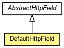

org.waarp.gateway.kernel
Class DefaultHttpField
java.lang.Object
 org.waarp.gateway.kernel.AbstractHttpField
org.waarp.gateway.kernel.DefaultHttpField
org.waarp.gateway.kernel.AbstractHttpField
org.waarp.gateway.kernel.DefaultHttpField
- All Implemented Interfaces:
- Cloneable
public class DefaultHttpField
- extends AbstractHttpField

- Author:
- Frederic Bregier
| Fields inherited from class org.waarp.gateway.kernel.AbstractHttpField |
ERRORINFO, fieldcookieset, fieldinfo, fieldmandatory, fieldname, fieldposition, fieldrank, fieldtovalidate, fieldtype, fieldvalue, fieldvisibility, fileUpload, present |
DefaultHttpField
public DefaultHttpField(String fieldname,
AbstractHttpField.FieldRole fieldtype,
String fieldinfo,
String fieldvalue,
boolean fieldvisibility,
boolean fieldmandatory,
boolean fieldcookieset,
boolean fieldtovalidate,
AbstractHttpField.FieldPosition fieldposition,
int fieldrank)
- Parameters:
fieldname - fieldtype - fieldinfo - fieldvalue - fieldvisibility - fieldmandatory - fieldcookieset - fieldtovalidate - fieldposition - fieldrank -
getHtmlFormField
public String getHtmlFormField(HttpPage page)
throws HttpIncorrectRequestException
- Specified by:
getHtmlFormField in class AbstractHttpField
- Parameters:
page - source HttpPage
- Returns:
- the html form of a field according to its type and value
- Throws:
HttpIncorrectRequestException
getHtmlTabField
public String getHtmlTabField(HttpPage page)
throws HttpIncorrectRequestException
- Specified by:
getHtmlTabField in class AbstractHttpField
- Parameters:
page - source HttpPage
- Returns:
- the html tab of a field according to its type and value
- Throws:
HttpIncorrectRequestException
clone
public DefaultHttpField clone()
- Specified by:
clone in class AbstractHttpField
setStringValue
public void setStringValue(String value)
throws HttpIncorrectRequestException
- Description copied from class:
AbstractHttpField
- Set the value
- Specified by:
setStringValue in class AbstractHttpField
- Throws:
HttpIncorrectRequestException - if the value was already set
setFileUpload
public void setFileUpload(FileUpload fileUpload)
throws HttpIncorrectRequestException
- Description copied from class:
AbstractHttpField
- Set the fileUpload
- Specified by:
setFileUpload in class AbstractHttpField
- Throws:
HttpIncorrectRequestException - if the value was already set
Copyright © 2009-2012 Waarp. All Rights Reserved.